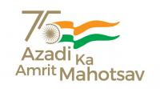

Azadi Ka Amrit Mahotsav’ is an initiative of the Government of India to celebrate and commemorate 75 years of independence of progressive India and the glorious history of its people, culture and achievements.
The Prime Minister, Shri Narendra Modi inaugurated the ‘Azadi Ka Amrit Mahotsav’ by flagging off ‘Dandi March’ from Sabarmati Ashram, Ahmedabad on 12th March, 2021. The celebrations started 75 weeks before our 75th anniversary of Independence and will end on 15th August, 2023.
Department of Higher Education and Department of School Education & Literacy have planned various activities under ‘आज़ादी का अमृत महोत्सव’.
'Azadi Ka Amrit Mahotsav' (AKAM)' is an ongoing celebration to commemorate the 75 glorious years of a progressive independent India. Under the aegis of AKAM, a campaign 'Har Ghar Tiranga' has been launched to encourage the citizens to hoist the National Flag of India in their homes.
To mark this momentous occasion, you are encouraged to hoist the flag in your homes from 13th to 15th August 2022. Apart from this, you can also 'Pin a Flag' virtually, along with posting a 'Selfie with Flag'.
-----------------------------------------------------------------------------------------------------------------------
| Sr.No. | Date | Activity | Description | Report | Gallery | |
| From | To | |||||
| 27 | September 7, 2022 | September 7, 2022 | International Day Of Clean Air For Blue Skies There is the need for collective understanding, accountability and action to solve the pernicious issue of poor air quality in India. To this end, IIT Bombay celebrated the International Day Of Clean Air For Blue Skies on September 7, 2022 through two events at the school level and at the Institute level. | There is the need for collective understanding, accountability and action to solve the pernicious issue of poor air quality in India. To this end, IIT Bombay celebrated the International Day Of Clean Air For Blue Skies on September 7, 2022 through two events at the school level and at the Institute level. (A) Details of half day event organized by ESEA, ESED (B) Essay writing in schools (C) Summary of participation of faculty in various events/workshops [Click here for Photos of faculty participation in various events/ workshops ] (D) Electric vehicles in IIT Bombay (E) Vanmahotsav report and photographs
| Report on International Day of Clean Air For Blue Skies | Click here for photographs of 'Vanamahotsav' |
| 26 | September 1, 2022 | September 15, 2022 | Swachhata Pakhwada 2022 IIT Bombay observed Swachhata Pakhwada during September 1-15, 2022. Various sections of the Institute were engaged in activities related to cleanliness and sanitation. Section wise reports of activities performed during the Swachhata Pakhwada are below: Not only during Pakhwada, the Institute has been conducting various events, activities related to Swachhata throughout the year. | Keeping inline with Swachha Bharat Mission, IIT Bombay organised following activities on its campus throughout the year:
Please click here for detailed report | Report on 'Swachhata Pakhwada' 2022 | Click here for photo gallery |
| 25. | July 30, 2022 | July 30, 2022 | VAN MAHOTSAV 2022: In an endeavour towards maintaining the green cover of the campus and spreading the message of conserving nature, Indian Institute of Technology Bombay (IIT Bombay) celebrated Van Mahotsav – the annual tree plantation drive on July 30, 2022 on its campus. About 400 saplings were planted by IIT Bombay faculty, staff and students along with students and teachers of Kendriya Vidyalaya and Campus School (both located within IIT Bombay campus). The saplings were planted on the hill slope behind Udaygiri building within IIT Bombay campus. | In an endeavour towards maintaining the green cover of the campus and spreading the message of conserving nature, Indian Institute of Technology Bombay (IIT Bombay) celebrated Van Mahotsav – the annual tree plantation drive on July 30, 2022 on its campus. About 400 saplings were planted by IIT Bombay faculty, staff and students along with students and teachers of Kendriya Vidyalaya and Campus School (both located within IIT Bombay campus). The saplings were planted on the hill slope behind Udaygiri building within IIT Bombay campus. On the occasion, Director Prof. Subhasis Chaudhuri along with Deputy Director (AIA) Prof. S. Sudarshan, Deputy Director (FEA) Prof. KVK Rao planted saplings of Ashok. Prof. Chaudhuri spoke about the significance of trees in our lives and encouraged the students to help build a greener environment by planting more trees. Prof. Tom Mathew, Dean (Infrastructure Planning and Support), IIT Bombay was also present along with Prof. Anurag Garg, Associate Dean (IPS) – 1 and Prof. Vedagiri Perumal, Associate Dean (IPS) – 3. Together, they encouraged the participants to develop sense of responsibility for the saplings. Cultural performances by the students of Campus School and Kendriya Vidyalaya, highlighting the importance of trees in our lives, were much appreciated by the gathering. The event was organized by the Horticulture Section of the Estate Office, IIT Bombay, which takes due care of the saplings planted at Van Mahotsav throughout the year. | ||
| 24. | July 23, 2022 | July 23, 2022 | As a part of Amrit Mahotsav and on the occasion of the birth anniversary of the great freedom fighter Lokmanya Bal Gangadhar Tilak, IIT Bombay hosted a play titled "Lokmanya Tilak" on Saturday, July 23, 2022, at 11 am in the Convocation Hall of IIT Bombay. | Details of the play: Title: "Lokmanya Tilak' Date: Saturday, July 23, 2022 Time: 11 am Venue: Convocation Hall, IIT Bombay | ||
| 23. | March 9, 2022 | March 9, 2022 | The Ministry of External Affairs of India is organizing a commemorative lecture series titled "India@75: Videsh Niti Distinguished Lecture Series", as part of celebrations of 75 years of India's Independence. The idea behind the lectures is to ''demystify India's foreign policy" i.e. to make young minds understand how India's foreign policy operates and the role of the Ministry of External Affairs of India. Under this initiative, IIT Bombay - Office of Dean International Relations and Ashank Desai Centre for Policy Studies is hosting a guest lecture in online mode. The details of the lecture follow: Title: "India in Southasia" Speaker: Professor and Ambassador Veena Sikri Date: Wednesday, 9th March 2022
Time: 3:00 pm to 4:00 pm IST | The details of the lecture follow: Title: "India in Southasia" Speaker: Professor and Ambassador Veena Sikri Date: Wednesday, 9th March 2022 Time: 3:00 pm to 4:00 pm IST About the Speaker: Veena Sikri’s career and experience straddle the worlds of academia and diplomacy. She has served for 37 years (1971-2008) as a career diplomat with the Indian Foreign Service, including as High Commissioner to Bangladesh (2003-06) and to Malaysia (2000-03), as Consul General in Hong Kong (1996-2000), and Director General of the Indian Council for Cultural Relations (ICCR), New Delhi (1989-92). She has held challenging and prestigious assignments at the Indian Embassies in Moscow, Kathmandu, Paris, and at the Permanent Mission of India to the UN in New York (1977-81), where she represented India in the UN Security Council, ECOSOC, and at Summit meetings of the Non-Aligned Movement (NAM). After retiring from the Indian Foreign Service, Veena Sikri joined academia as Professor, holding the Ford Foundation endowed Chair, Academy of International Studies, Jamia Millia Islamia University, New Delhi, from February 2009 to October 2013. She was concurrently Visiting Senior Research Fellow with the Institute of South East Asian Studies (ISEAS), Singapore (November 2008 to October 2011). Her work at ISEAS resulted in a book on Malaysia-India relations. Veena Sikri is the Founding Trustee and Convener of the South Asia Women’s Network (SWAN). While at Jamia Millia Islamia, Veena Sikri conceptualized and created this organization, which was launched in March 2009. With its unique focus on gender empowerment as the key to sustainable economic growth, social development and environmental sustainability in South Asia, SWAN brings together women leaders from nine South Asian countries : Afghanistan, Bangladesh, Bhutan, India, Maldives, Myanmar, Nepal, Pakistan and Sri Lanka. Two flagship projects that SWAN is currently working on are on “Women for Change : Building a Gendered Media in South Asia”, and “The Rural Tourism based Social Enterprise Project for Sustainable Development and Gender Empowerment in South Asia”. Professor Veena Sikri is Vice Chairperson of the South Asia Foundation (India Chapter), a secular, non-profit and non-political organization, with eight autonomous chapters across South Asia. As Chairperson of ICCR’s Performance Audit Committee, Veena Sikri submitted, in December 2016, her Report on “India’s Soft Power Projection Through Cultural Diplomacy”. She has served as member of ICCR’s General Assembly (2016-19), and Chairperson of ICCR’s Finance Committee (2016-19). Veena Sikri’s publications include “India & Malaysia : Intertwined Strands” (2013), published by ISEAS, Singapore, and Manohar, New Delhi; and the volume co-edited by her (together with Professor Muchkund Dubey and Professor Imtiaz Ahmed) on “Contemporarising Tagore and the World” (UPL, Dhaka, 2013). She is currently working on a book titled “The Geopolitics of Bangladesh”. | Click here to view the recordings of the lecture | |
| 22 | February 21, 2022 | February 22, 2022 | Under the initiative of Azadi Ka Amrit Mahotsav, Environmental Science and Engineering Department (ESED) is organizing two a 2-day symposium (online) on 'Emerging Contaminants Fate, Transport & Remediation Aspects' during February 21-22, 2022 from 2.00 pm-4.00 pm | The details of the symposium and the poster can be accessed at the following link: https://drive.google.com/file/d/1QWodGX_EH4UBJmqUlgkxJrpwbt6arBob/view?usp=sharing For more details, please click on Symposium Brochure | Click here to view the recordings of the symposium | |
| 21. | January 15, 2022 | February 4, 2022 | With reference to Office Memorandum vide No. F.No. 5-18/2021-PN-II dated December 23, 2021, please find attached the report from IIT Bombay with regard to the participation of IIT Bombay in the project “75 crore Surya Namaskar: A Tribute on 75th anniversary of Independence” | Yogastha, IIT Bombay participated in the project “750 million Surya Namaskar: A Tribute on 75th anniversary of Independence”. To commemorate the 75th anniversary of Independence, the National Yogasana Sports Federation, Ministry of Youth Affairs and Sports, Government of India, decided to run this project, 750 million Surya Namaskar in 30 states, involving 30,000 institutes and 3 lakh students. The activity was conducted in online mode to adhere to the COVID-19 pandemic protocols. As per the project guidelines, participants performed 13 rounds of Suryanamaskar every day for 21 days, with instructions and facilitation by Yogastha core team members. The sessions started on January 15, 2022, and the whole activity was successfully completed to achieve the target of 21 days. In addition to Suryanamaskar, the participants also practiced sukshma-vyayam and yoga-Nidra, to ensure a robust daily practice that would benefit the mind and the body as a whole. The event witnessed enthusiastic participation from all the members of the IIT Bombay community including faculty, students, staff, and their family members. The participants practiced all the exercises and performed Suryanamaskar with full determination and zeal. | Click here to view the report | |
| 20. | January 13, 2022 | January 14, 2022 | Under the initiative of Azadi Ka Amrit Mahotsav, Environmental Science and Engineering Department (ESED) is organizing two Faculty Development Workshops (online mode) titled ‘An Overview of Recent Advances in Water and Wastewater Treatment Technologies’ and ‘Application of Nanotechnology in Water and Wastewater Treatment’ during January 10-11 & January 13-14, 2022 respectively.
| Details of the workshops are given below: Workshop II: Title: ‘Application of Nanotechnology in Water and Wastewater Treatment Date: January 13-14, 2022 Schedule and details for joining the workshop are available at: https://drive.google.com/file/d/1AiePL8P2lcTtcejhGI5giMUi3-8DGUE-/view?usp=sharing The workshops are sponsored by SERB. | To view the schedule click here | |
| 19 | January 10, 2022 | January 11, 2022 | Under the initiative of Azadi Ka Amrit Mahotsav, Environmental Science and Engineering Department (ESED) is organizing two Faculty Development Workshops (online mode) titled ‘An Overview of Recent Advances in Water and Wastewater Treatment Technologies’ and ‘Application of Nanotechnology in Water and Wastewater Treatment’ during January 10-11 & January 13-14, 2022 respectively.
| Details of the workshops are given below: Workshop I: Title: ‘An Overview of Recent Advances in Water and Wastewater Treatment Technologies’ Date: January 10-11, 2022 Schedule and details for joining the workshop are available at: The workshops are sponsored by SERB. | To view the schedule click here | Click here for video recordings Link for the flyer, screenshots:
|
| 18 | November 29, 2021 | November 29, 2021 | Talk on "New Entrepreneurial Opportunities in Digital India" by Dr. Ganesh Natarajan About the speaker: Dr.Ganesh Natarajan, an entrepreneur and businessperson, is the recipient of the Distinguished Alumnus Award of IIT Bombay and the National Institute of Industrial Engineering (NITIE). Dr. Natarajan obtained his Ph.D. degree from the School of Management, IIT Bombay in 2005. He holds a degree in Mechanical Engineering, a postgraduate degree in Industrial Engineering, Ph.D. in Knowledge Management, Advanced Management from Harvard Business School. He is currently the Executive Chairman and Founder of 5F World, a platform for Digital Startups, Skills and Social Ventures in India. Dr. Natarajan has been recognized for excellence in entrepreneurship and people-centric leadership. He is a proud recipient of the award for excellence in IT from India's first IT Minister Pramod Mahajan for his leadership role. He received awards for leadership from the Asia Pacific HR Forum and exceptional entrepreneurship from Ernst & Young. | Abstract of the talk: Digital India is fast becoming a reality and while there may be some Recordings of the talk: https://archive.library.iitb.ac.in/items/show/5087 | To View PDF Click Here | Link |
| 17 | September 01, 2021 | September 1, 2021 | Talk on "The Role of Administration in Institutions of Higher Education" by Dr. Premkumar, Registrar, IIT Bombay | Series of lectures (online) on administrative and technical skills required for enhancing operational efficiency and effectiveness. Internal and external experts delivered talks on various topics of interest and relevance. Recordings of the talk: https://archive.library.iitb.ac.in/items/show/5077
| ||
| 16 | August 14, 2021 | August 14, 2021 | Ministry of Tourism and Association of Indian Universities have collaborated with each other to create a unique event consisting of 12 episodes, which will be inaugurated on 14th August, 2021 at 1.30 p.m. Each of the 12 episodes shall focus on diverse themes regarding cultural heritage of India and generate awareness about our incredible India. The last episode will culminate with the end of the Mahotsav in August, 2022.
| A Public Link is mentioned below to join the Digital India Virtual Event: https://digitalindia-gov.zoom.us/i/93312769334 Password: 900336 The event can be watched on our Youtube Channel (youtube.com/incredibleindia) & Website ‘Incredible India’. After watching the event the participants are requested to take a Quiz. The Quiz link is created for event on 14th August, the following link can be used for further communication: https://quiz.mygov.in/quiz/india75-a-journey/
| ||
| 15 | August 15, 2021 | August 15, 2021 | Contribute your rendering of the National Anthem of India at: http://rashtragaan.in/ This web portal https://rashtragaan.in has been created by Ministry of Education for students to record and upload their videos singing the National Anthem A compilation of the uploaded videos of the National Anthem will be shown live on 15th August, 2021
| Circular received from MoE: https://drive.google.com/file/d/1jYLgPhwT6BjuHmrNKq4NKIbiL-dMGMjc/view?u... | ||
| 14 | August 14, 2021 | August 14, 2021 | Fit India Movement's Freedom Run 2.0 is to be conducted offline for all the residents of the Institute campus as part of 'Azadi Ka Amrit Mahotsav". The race would be across the Institute. It would be a limited registration event, following Covid protocols at all times in places with crowds. The race would be across the Institute.It would be a limited registration event, following Covid protocols at all times in places with crowds. Registrations would be first come first serve.
The competition would happen in two legs separately, for staff and students, with male and female categories in each of them and would start at the premises of the New SAC. This offline competitive arena that has been brought to life after long lockdowns. Exciting prizes await winners! | The Fit India Movement Freedom Run 2.0 took place in the premises of the Indian Institute of Technology Bombay on the August 14, 2021 as part of celebration of Azadi ka Amrit Mahotsav (Celebration of 75 years of Independence). It was a short run that spanned around the campus with the route spanning 3.2 kms for men and 2 kms for women. The event saw a total of 85 people participate in the race. Following is the poster link of event: https://drive.google.com/file/d/1mNMK3XbyQmlUQdJjhyIhQQ7yklvdyky9/view?u... The event was conducted in 3 legs with the first starting at 6:30 AM and the subsequent ones starting with a gap of an hour each. A registration-cum-safety desk was set up to ensure the smooth handling of the event. The main objective of the run was to ensure safe physical activity and it was met through the extensive and strict enforcement of Covid protocols throughout the run. All participants were maintaining social distance at all times and were required to wear masks at all places with crowding. The staff and student representatives managing the event were also completely masked up and ensured the same. The participants ran enthusiastically towards the finish. There was an entire spectrum of ages with a 6-year-old child finishing the 2km and an old couple completing the race! The organising student and staff community handed over the prizes to the winners and thanked all the participants for their continued enthusiasm and association with sport. Winners list: https://docs.google.com/spreadsheets/d/1T4dnTkQaUA8K3LgWu-kgB8kfMW79IOSL... Photo drive link: https://drive.google.com/folderview?id=1KbV9BybfZKL42cHdPvPrQLSZulCkF5Vm Social Media Links:
| ||
| 13. | July 24, 2021 | July 24, 2021 | SINE organised a webinar to commemorate the 75 years of India's Independence celebrations in August 2022- "Azadi Ka Amrit Mahotsav''. The title of this webinar is Role of innovative technologies to help resolve malnutrition in India. This webinar was a collaborative initiative under SINE Power Hour Biotech series and roadshow series by BIRA Speakers: Dr. Anant Bhan, Adjunct Professor, Yenepoya University (Moderator) Prof. Satish Agnihotri, Emeritus Fellow, CTARA, IIT Bombay Dr. Shirshendu Mukherjee Mission Director,Grand Challenge India for BIRAC, DBT Dr. Saugandha Das, Co-Founder, Edhaa Innovations
| Highlights of the session Topics discussed: Malnutrition in India, the challenges faced in the last 75 years, Government policies to combat malnutrition, Scientific / Technological solutions available and the role of innovation in resolving the issue of malnourishment. Picture Link: https://drive.google.com/drive/folders/1GnGkcOJBSlmiwoWoFqFd8PdNkQT77Rdh... Video Link: https://www.youtube.com/watch?v=te_EvX_U28A&t=1s | ||
| 12 | June 19, 2021 | June 19, 2021 | An International Webinar "Overview Materials, Dessign and Constructions Practices for Biluminous Pavements in India" Prof.Dharmveer Singh, Department of Civil Engineering Organized by Transportation Systems Engineering, Department of Civil Engineering | Transportation Systems Engineering, Department of Civil Engineeringg has research collaboration with Prof. Sherif El-Badawy, Mansoura University, Egypt. On their request, the department is organizing a webinar for them on "Overview on Materials, Design and Constructions Practices for Bituminous Pavements In India", Post-doc and Ph.D. students working with Prof. Dharmveer Singh, are also speakers in this webinar so they also get exposure. Online: MS Team Joining link: htttps://tinyurl.com/aehdpass https://drive.google.com/file/d/1YsrPFHx8D4Hq9V0kBG5ByaEXhOmLLMvs/view?u... | ||
| 11 | August 6, 2021 | August 9, 2021 | Conference titled "Research in Yoga:Mind, Consciousness and Identity" | The conference will be held virtually with the assistance of Yogastha team Poster link: https://drive.google.com/file/d/1RU62wxaVyzidYd-vP4j5Nm983K8vaHeI/view?u... * Pre-conference workshop on "Design and Approaches of Research: * Two-day e-conference workshop (3rd Yogastha e-Conference) https://drive.google.com/drive/folders/1L9vDdtPDgANmMtFHQNVcyF9BXbUdDmHK | ||
| 10 | October 7, 2021 | October 9, 2021 | Three-day international conference "Soft Matter Young Investigators Meet" | This international conference aims to bring together both national and international researchers who are working in the research area of soft matter science. Through virtual mode at IIT Bombay Recorded Link: After the event | ||
| 9 | May 17, 2021 | May 22, 2021 | Sustainable Coastal Infrastructural Engineering and Design in a Changing Climate | This virtual course was organized by Profs. Manasa R. Behera and V. K. Srineash of Civil Engg. dept., IIT Bombay. Practicing engineers, consultants, researchers, Faculty and Graduate students from Technical Instittutes across the country attended the course lectures delivered by National and International Experts in the field. The course covered basic coastal engineering, vulnerability, process modelling, climate change impact, and design of coastal infrastructures. Online pic:https://drive.google.com/drive/folders/1HFmNpHlpIs2iFjgQcWX6h925tgbfrGT-... | ||
| 8 | May 3, 2021 | May 7, 2021 | Refresher cum orientation programme for Rural Housing Engineers, Maharashtra | Based on the request from Rural Development Department, Maharashtra, online training programme was planned in 3 phases by Prof. Prakash Nanthagopalan, Department of Civil Engineering to train more than 100 Rural Housing Engineers. In this regard, the first online CEP course "Refresher cum Orientation Programme for Rural Housing Engineers (Maharashtra)" was organized during May 3-7 2021 as a part of Bharat Ka Amrit Mahotsav. Online pic: https://drive.google.com/drive/folders/1fxkjRoPEY5ttHsnNienQOrg5OJgrtVM4... | ||
| 7 | April 22, 2021 | April 22, 2021 | Launch of “Energy and Climate - Keep UPP (Understand, Pledge & Progress)” program with tagline “million pledges for billion hopes” on the occasion of Earth Day celebration Organizer: Prof. Chetan Singh Solanki, Department of Energy Science and Engineering & Founder of the Energy Swaraj Foundation. | Chief Guest: Hon. Minister of Education, Govt. of India Shri Ramesh Pokhariyal | ||
| 6. | March 24, 2021 | March 24, 2021 | Panel Discussion conducted by Interdisciplinary Program in Climate Studies, IIT Bombay on "Climate Resillient Engineering Design" | "Open to All: Webex Registration link: https://cutt.ly/hxrvnKM Moderator: Prof. N.C. Narayan, CTARA and Prof. Arpita Mondal, Dept of Civil Engg & IDP Link for Panel Discussion Pics : https://drive.google.com/drive/folders/1XhdBTdje7qj_V-aJ3yTA&t=6573s Recorded YouTube video link: https://youtu.be/Zx_V-aJ3yTA" Poster Link: https://drive.google.com/drive/folders/1nzC5XMBaK34X6rjzSSMI6HEjgQmG-uGk | ||
| 5. | March 22, 2021 | March 22, 2021 | Symposium on World Water Day, organised by Prof. Shobha Shukla, Department of Metallurgical Enginering and Materials Sciences | "Through Zoom Meeting: https://zoom.us/j/97849573493?pwd=OXVvNTFReC9ZYlMvR0QwM2ozckN0dz09 Meeting ID: 978 4957 3493 Passcode: 22032021 Recorded Link: https://drive.google.com/file/d/1oO22xQuf6Go2CFsVmFnNgsW96z-SNdj0/view?u... Link of flyer and schedule details of the event: https://drive.google.com/folderview?id=1UAUaXst9Vg4f505Gbe9tDzWOOl8nQLYm Link for Symposium Pics : https://drive.google.com/drive/folders/1WZPsLpP2zf9u00lDGM3VDwO5aVCey2tA | ||
| 4. | March 17, 2021 | March 17, 2021 | Seminar conducted by Department of Energy Science and Engineering (DESE) on "India Energy Security Scenarios" | "Profs. R Banerjee, V Ramadesigan and Mr. Sarvesh Chaudhari Meeting link: meet.google.com/xgf-myio-axo Abstract Link: https://drive.google.com/drive/folders/1D0JmBRezttjQ97hBpF_ZVeFLpGAnk2Wp Recorded link: https://youtu.be/t5KiLYiEEsg" | ||
| 3 | March 17, 2021 | March 17, 2021 | Panel Discussion conducted by Interdisciplinary Program in Climate Studies, IIT Bombay on “Scope for Technology Development & Entrepreneurship in Climate Studies | Moderator: Prof. Chandra Venkataraman, Department of Chemical Engineering and Interdisciplinary Group in Climate Studies, Prof. Sridhar Balasubramanian, Department of Mechanical Engineering and IDPCS YouTube Video Link: https://youtu.be/FDqQrg5c9xg Poster Link: https://drive.google.com/drive/folders/1ry-yojh72ihFJ1MVAa_o4fBBTee1KsT1 | ||
| 2. | March 12, 2021 | March 12, 2021 | Essay Writing Competition on: “India’s Freedom Struggle” | Received 15 entries The last date of submission was March 12, 2021 (through email or actual submission to pro office) Result link: https://drive.google.com/file/d/1mXmdzNbNRBUbrRKmkR9H2u3aGMedAhPr/view?u... | ||
| 1. | March 12, 2021 | March 12, 2021 | Talk on "The Role of IIT Bombay in Immortalising the Dandi Salt March" | Through Webex: Webex event recording: Institute Lecture on "The Role of IIT Bombay in Immortalising the Dandi Salt March" Recording URL: https://kaksha.webex.com/kaksha/ldr.php?RCID=936fdf2275984bb4820fe7cfb57... Recording password: FuAJZye3 Photo Link: https://drive.google.com/folderview?id=1bQ0o1kFmJT6HMvSn6Z7cVi2GetzX_-8R The films are shared through DRIVE:- A) https://drive.google.com/file/d/16wy2iQXsM26z1Jv2yOcZkKAcUqOhzFEu/view?u... B) https://drive.google.com/file/d/1KeeONPrA6c3vz72TTbMrfYoRaCmvuKVM/view?u... | ||
-----